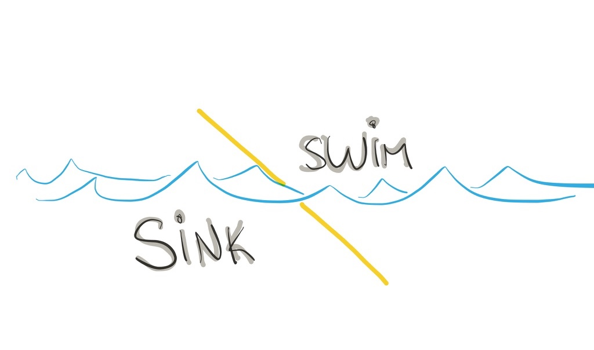

Professionnal growth, Sink or SwimIn our industry, creating digital products, professional growth and learning is determined by your formal education and experience. Experience can be a crucial factor in shaping your growth, the type of designer you will be, and finding out what is that you actually enjoy doing in our very fragmented and specialised profession.
As someone who has a certain level of responsibility of what projects people on my team get to do, I believe that you have to make and effort on finding the right person for the job based on the needs of the project and their skills. But (there is always a but…) if we only allow people to do what they are already good at, they probably won’t grow.
if we only allow people to do what they are already good at, they probably won’t grow
In my personal experience the projects that I’ve grown the most are the ones that presented the biggest challenges, those that push you beyond what you think you are capable of doing. At the end, you push through and come out in the other side better and stronger. That process is hard, people struggle a lot, requires them to put in extra hours and could take a toll in their confidence if things don’t turn out well.
It’s “sink or swim” and we have accepted it as the way people are supposed to grow, to challenge themselves, face bigger or harder tasks, pushing themselves to be better, sometimes underestimating what could happen if they can’t swim.
Creating a better growth experience
At a meeting, while discussing this subject regarding a person on our team, the magic phrase came out from one of my colleagues “just because we had to suffer to grow doesn’t mean they have to”.
Then, I was able to put into words what is that we try to do every time we assign someone to a project, throwing them in the water, but making sure they won’t drown. To give them a “Controlled growth environment”.
In order to do that well - provide controlled growth environment - you have to do some things first.
Understand their capabilities
You have to know what that person can do well, tangible things, like creating wireframes, defining the information architecture, conceptualising new solutions, creating prototypes. What others things they bring to the project, and this can be more subjective, like their ability to collaborate with others, or their stakeholder management abilities, presenting and articulating design solutions.
Additionally you have to understand what motivates them, where would they like to grow, and what’s their idea of a good project, are they better on short or longer projects, do they need supervision, what’s their preferred way of communication.
Growth trajectory / Personal Phase
For most people, you what their capabilities are if you work long enough with them. But one thing that we should also consider is how are they in that particular moment on a professional and personal level.
The growth trajectory refers to how they feel about the kind of work they want to do: are they eager to tackle a new challenge, or are they coming of a big hard project and prefer something different. Are they looking to grow towards management roles or they love their craft and are happy with refining it further.
On a personal level, we should be aware of what is going on in their life that could impact their performance. Moving houses, sick relative, hard breakup, newborn. How we are in our lives impacts our work more than we know.
But even doing your best as a manager, knowing your team and what motivates them is not enough. Most times we depend on what projects come in and who is available at that time, starting a process that I call “resourcing Tetris”.
So, what can you do?
Visibility of the team’s skills and growth plan
Make the information of your team’s skills and growth plan visible to the people in charge of resourcing projects, if that’s you, keep a document where you can review them before assigning people to projects.
Sometimes we see some level of unconscious favouritism, people who get assigned to the best projects, or who we have in our top of mind because we’ve seen more of their work lately, that could result in a vicious cycle where only a few continue to grow and have the opportunity to show their worth while others get stuck on less challenging projects.
Clear goals and responsibilities
This is the most common problem I have seen. Projects start with incomplete teams, the main goal wasn’t clearly communicated to the group, or roles were unclear.
If you are doing this well it should be reflected in the quality of your project kickoff sessions.
Goals alignment
Help the person assign to the project align their personal goals with the project goals. Where are the opportunities to grow and make sure there is enough space for the challenge.
Doing something new sometimes mean requiring more time to do so, or it could mean compromising quality, so make sure that the challenge given to the person is not the most critical element of the project or that you have a solid backup plan in place.
Pair up, and let go
Depending on the person, you can give them a challenge and they will find the way to figure it out on their own.
Other times is best to show them the way, pairing them up with someone that can show how it’s done and slowly move out, giving more responsibility to the more junior person on the team after having set up a common understanding on the next steps and what is expected from them.
Know when (not) to step back in
During the project, it will come a time where your team member will struggle. It’s important that you learn when is a moment that requires you to step back in and support them, or in the contrary, let them face the challenge on their own.
Make sure you stay in the loop and offer the right level of support during the process.
Transition plan
Projects change, move to different phases, or change scope. You have to be willing to adapt to those changes. Allow people to step out when the project is not longer aligned with their goals, or after they have spent more time than expected.
It’s common for managers to take the comfortable way out and trying to keep people for as long as possible in the same project, they would be the most knowledgeable and also means not playing resourcing Tetris to replace them. I have seen this go wrong multiple times, when people leave the company because of feeling stuck, sometimes even before even saying that they would rather work on something else and searching for a solution internally.
Try to anticipate this, create a transition plan, don’t make promises you cant keep regarding the timelines, and try to bring some fresh air into projects by changing who gets to work on them.
A shared responsibility
Your team’s growth is important, but it’s a shared responsibility. They are responsible fort their own growth, as such, they should work on knowing what should be their next steps and ask you for the opportunities to make it happen. Then, you can provide the right context to enable it, support them through the process, course correct, and provide the right work to keep growing.
If you know other ways to help team members grow, or think one of this has flaws let me know. This is a process and should change and adapt based on the types of projects that we get to work on and the people that form the team.